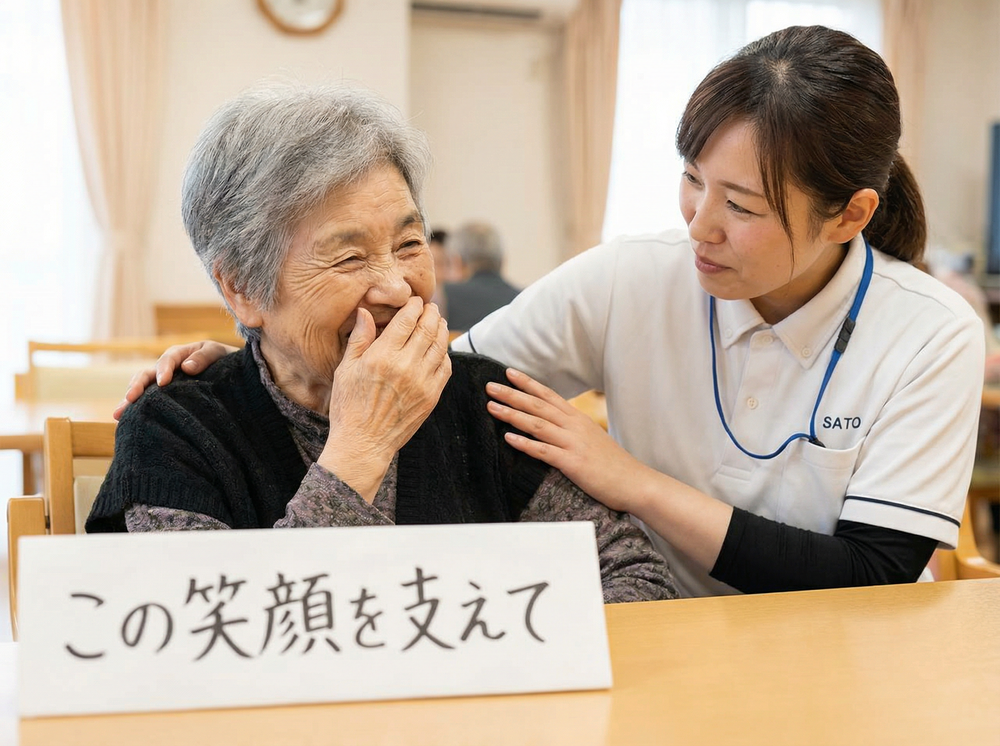
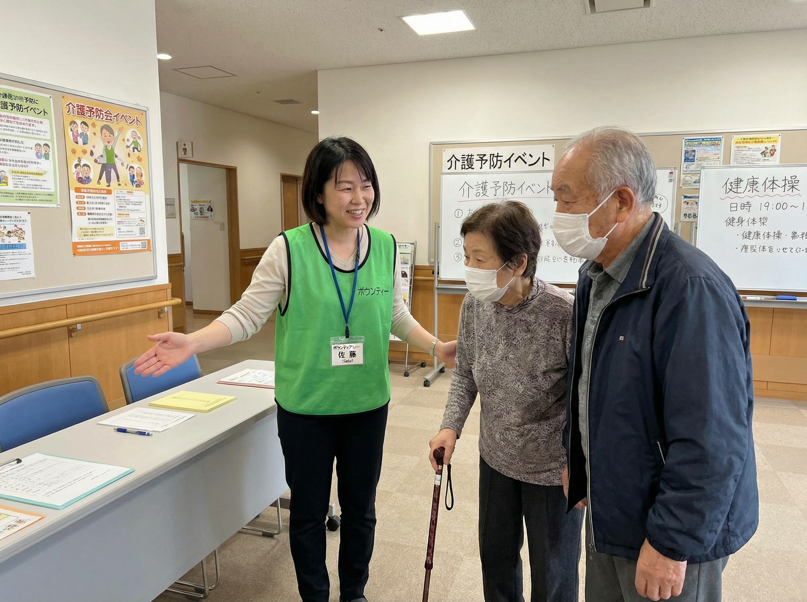

Support Us
参加する・寄付する
NPO法人○○○○の活動は、多くの皆さまのご参加・ご寄付によって支えられています。
会員として、寄付者として、ボランティアとして — あなたに合った方法で、ぜひ私たちの活動にご参加ください。
Donation
寄付のご案内
皆さまからのご寄付は、地域社会の課題解決と持続可能な未来づくりに活用されます。

ご寄付の使い道
- ● 地域づくり支援事業の運営
- ● NPO人材育成プログラムの開催
- ● 企業・行政との協働事業の推進
- ● 調査研究・政策提言活動
寄付方法
| 方法 | 詳細 |
|---|---|
| 銀行振込 | ○○銀行 ○○支店 普通 1234567 |
| 郵便振替 | 口座番号：00000-0-000000 |
| クレジットカード | オンライン決済（準備中） |
税制上の優遇措置
当団体への寄付金は、確定申告により所得控除を受けることができます。
Volunteer
ボランティア
あなたの経験やスキルを活かして、地域社会に貢献しませんか。

イベント
イベント運営ボランティア
ワークショップやセミナーの会場設営・受付・進行サポートを行います。
事務サポート
事務局ボランティア
資料作成やデータ入力、郵送作業など事務局業務をサポートします。
プロボノ
プロボノ（専門スキル支援）
デザイン・IT・法務・会計など、専門スキルを活かしてNPOを支援します。
ボランティアへの参加をご希望の方は、お気軽にお問い合わせください。
ボランティアに申し込むご不明な点はお気軽にお問い合わせください
入会・寄付・ボランティアに関するご質問は、いつでもお受けしています。